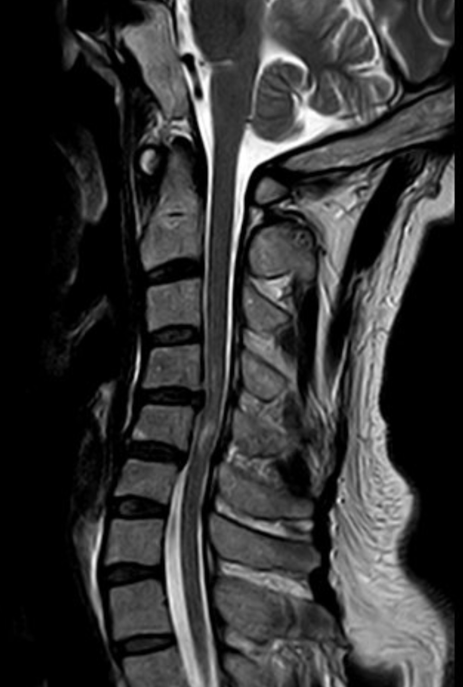
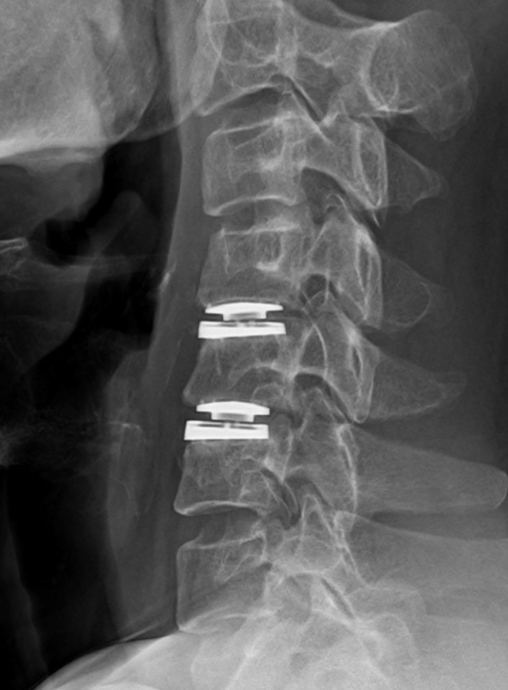
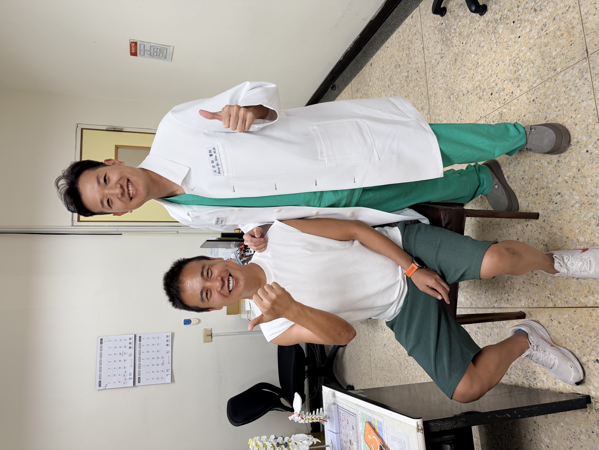

一次跌倒後，從熱愛運動變成四肢無力
44 歲的董先生，平時熱愛運動，也固定參加跑步班。對他來說，運動不只是休閒，也是生活中很重要的一部分。沒想到一次不慎跌倒、額頭撞擊後，情況急轉直下。
送到急診時，董先生已經出現明顯四肢無力。當時上肢肌力勉強約 3 分，雙下肢幾乎癱瘓，肌力為 0 分。原本可以跑步、正常活動的人，突然變成無法站立、無法行走，這對患者與家屬來說都是極大的衝擊。
這種情況已經不是單純扭傷、撞傷或肌肉拉傷，而是必須高度懷疑頸椎脊髓受到嚴重壓迫或急性神經損傷。
急診檢查：頸椎椎間盤突出合併脊髓壓迫與水腫
在急診安排頸椎核磁共振檢查後，發現董先生的頸椎第四、五、六節有明顯椎間盤突出，造成脊髓神經受到壓迫。
更需要注意的是，影像上已經可以看到脊髓水腫的情形。脊髓就像身體最重要的神經主幹，控制四肢動作與感覺。一旦脊髓受到嚴重壓迫，患者可能出現手腳無力、走路困難，嚴重時甚至可能造成癱瘓風險。
董先生的狀況屬於需要搶時間處理的急性神經壓迫。
治療重點不是觀察看看，而是必須儘快判斷：
- 脊髓壓迫在哪裡？
- 是否有機會透過手術減壓保護神經？
- 如何在解除壓迫的同時，保留頸椎功能？

圖片說明：術前 MRI 可見頸椎椎間盤突出造成脊髓神經受壓，與急性四肢無力症狀相符。
治療考量：急性脊髓壓迫，需要把握減壓時機
頸椎神經壓迫不一定都需要手術。
如果只是輕微手麻、肩頸痠痛，且沒有明顯肌力下降或脊髓壓迫症狀，可以先安排門診評估，依病況考慮藥物、復健、姿勢調整或疼痛介入治療。
但董先生的情況不同。他已經出現明顯四肢無力，雙下肢肌力幾乎為 0 分，影像也顯示頸椎椎間盤突出造成脊髓壓迫與水腫。這代表脊髓正在承受嚴重壓迫。
如果沒有及時解除壓迫，神經功能可能進一步惡化，甚至留下不可逆的神經損傷。經過緊急評估與家屬討論後，安排進行前頸椎減壓合併人工椎間盤置換手術。
治療方式：前頸椎減壓合併人工椎間盤置換術
董先生接受頸椎微創前位手術。手術經由頸部前側小切口，順著自然解剖間隙進入病灶位置，清除造成脊髓壓迫的椎間盤突出與相關退化組織，讓受壓迫的脊髓重新獲得空間。
在完成神經減壓後，依照董先生的年齡、活動需求、頸椎條件與病灶狀況，選擇進行人工椎間盤置換。
人工椎間盤置換的目的，不只是解除壓迫，也希望在適合的患者身上，保留該節段較自然的活動度。對董先生這樣年紀較輕、平時熱愛運動、頸椎條件合適的患者來說，人工椎間盤置換是可以評估的重建方式之一。

圖片說明：術後 X 光可見人工椎間盤置換位置，協助維持椎間高度與頸椎活動功能。
治療後變化：從無法站立，到出院前可以自行走路
手術後，董先生的神經功能逐步恢復。出院前，他已經可以自行走路。對一位急診時雙下肢肌力幾乎為 0 分的患者來說，能重新站起來、跨出步伐，是非常重要的恢復里程碑。
後續門診追蹤時，董先生持續復健與逐步恢復活動。術後約半年，他已經可以回到跑步班，慢慢恢復原本喜歡的運動生活。
當然，這並不代表每一位急性脊髓壓迫患者都能有相同恢復速度。神經恢復會受到壓迫時間、脊髓受傷程度、水腫狀況、年齡、身體條件與復健配合度影響。
但董先生的案例提醒我們：
急性神經受傷需要搶時間。
當四肢無力、無法行走或脊髓壓迫症狀出現時，不能只是等待門診慢慢排。

文宏裕醫師的治療觀點
頸椎手術的目的，不是讓病人害怕手術，而是在神經受到嚴重壓迫時，及時保護脊髓與神經功能。
很多人以為手麻、肩頸痛只是姿勢不好。但如果已經出現手腳無力、走路不穩、踩地無力，甚至跌倒後突然四肢無力，就要高度警覺頸椎脊髓壓迫。
董先生的狀況不是一般門診慢慢追蹤的肩頸痠痛，而是急性脊髓壓迫合併明顯神經功能缺損。
在這種情況下，時間非常重要。越早確認壓迫位置，越早進行適當減壓，就越有機會減少不可逆神經損傷。
人工椎間盤置換不是每個人都適合。但對於年紀較輕、活動度仍好、沒有明顯頸椎不穩定或嚴重關節退化的患者，人工椎間盤可以在減壓後，盡量保留較接近原本頸椎的活動功能。
能保留活動度的，我們盡量保留；
需要穩定融合的，我們精準做好支撐。
不該開的刀，我不開；該開的刀，我做到最好。
手術不是目的，重新回到生活才是目的。
把時間留給生活，不留給疼痛。
案例提醒
本案例已去識別化處理，內容僅作為疾病與治療方式說明。每位患者的病況、神經受壓時間、脊髓受傷程度、治療方式與恢復速度都不同，實際治療仍需經由醫師評估、影像判讀與患者狀況共同決定。
若外傷後出現四肢無力、無法行走、走路不穩、大小便控制異常或會陰部麻木，請勿等待門診，應立即至急診評估。
急性神經受傷需要搶時間。
把時間留給生活，不留給疼痛。